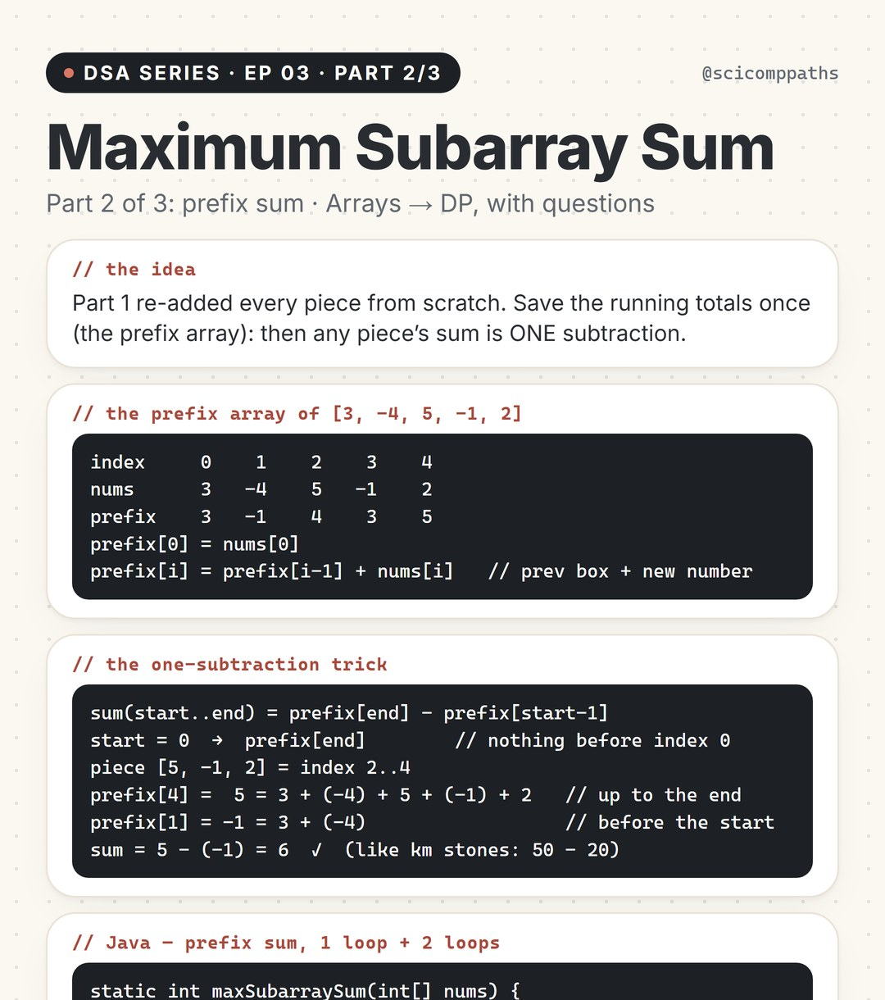

DSA SERIES · EP 03 · PART 2/3
Maximum Subarray Sum prefix sum + Java code
Arrays to DP, every data structure, every algorithm, with questions. Episode 3, Part 2 of 3 (prefix sum): the running totals of [3, −4, 5, −1, 2], any piece's sum in one subtraction, the start = 0 case, the 2-loop Java code, O(n²) time vs O(n³), interview follow-ups and practice. Part 3 is Kadane's, the optimal one. One page.

Free PDF — no sign-up
One page. Save it for your coding round.
Missed Part 1? Brute force notes. New cheat sheet with every DSA Visualised and System Design reel.
More free sheets in the notes library · Made by @scicomppaths